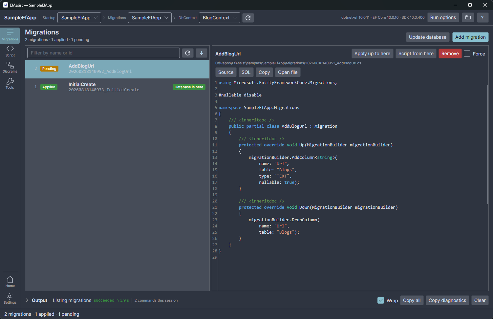
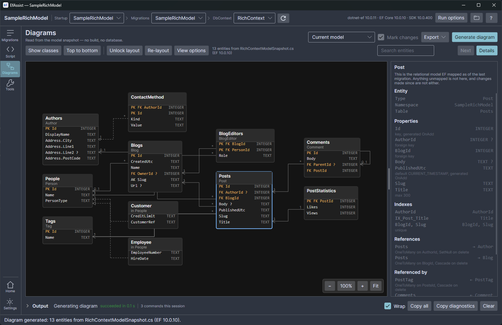

EF Core migrations,
without the command line
A desktop GUI over the dotnet ef CLI. Open a solution, pick a DbContext,
and add, apply, roll back, remove and script migrations — without remembering which project is
--project and which is --startup-project.
Free and open source, MIT licensed. Installs per-user — no administrator rights, no .NET runtime needed.

Up and Down actually change.What it does
Four tabs, and a keyboard shortcut for each.
Migrations Ctrl+1
Every migration with its applied or pending state, read from the database itself. Add, apply, roll back to any point, remove, drop. Anything that touches a database asks first, and says exactly what it is about to do.
Script Ctrl+2
migrations script between any two migrations, idempotent or not, in a
syntax-highlighted viewer with Copy and Save As.
Diagrams Ctrl+3
Your model as an entity-relationship or class diagram, read from the EF model snapshot — no build, no database. Exports to JSON, SVG, PNG, PDF or Mermaid.
Tools Ctrl+4
Ask EF whether your model has changes not yet in a migration, see exactly what this workspace is pointed at, and reach the actions that affect the whole database.
Errors in plain language
The common EF failures — a missing Design package, the wrong startup project, no
DbContext found — explained in a sentence, with the raw output still one click away.
Nothing hidden
Every action runs the real dotnet ef and streams its output live, cancellable.
Copy diagnostics puts the command line, exit code, full output and tool versions on
your clipboard.
See the model, at any point in its history
The diagram is read from the model snapshot each migration leaves behind, so you can pick any migration and see the model as it stood then — with what that migration added, removed and changed marked up against the one before it.

Download
Windows x64. Take a file from the latest release.
| File | Use it when |
|---|---|
EfAssist-win-Setup.exe |
Start here. Installs per-user into %LocalAppData%\EfAssist — no
administrator rights, no .NET runtime needed, and it updates itself. |
EfAssist-win-Portable.zip |
The same application with no installer. No updates. |
EfAssist-win.msi |
Machine-wide, for deploying via Group Policy or Intune. Needs administrator rights; updates still come from the in-app updater. |
You also need the tool EfAssist drives:
dotnet tool install --global dotnet-efThe app checks for it at startup and shows the command to copy if it is missing.
Questions
Does it need my connection string?
No. EfAssist ships no database drivers at all — it asks dotnet ef, which resolves
the connection from your startup project's configuration and user-secrets exactly as it does on
the command line.
Why does SmartScreen warn me?
The installer is not code-signed yet, so Windows has no reputation for it. Choose More info, then Run anyway — or use the portable zip.
macOS or Linux?
Not published yet. The app is Avalonia and the whole codebase is cross-platform, so it is a build-matrix job rather than a rewrite — parked in the roadmap, not ruled out.
Which EF Core versions?
Whatever your dotnet-ef tool supports, since that is what runs. The app warns when
the tool's version and your project's Microsoft.EntityFrameworkCore reference
disagree.